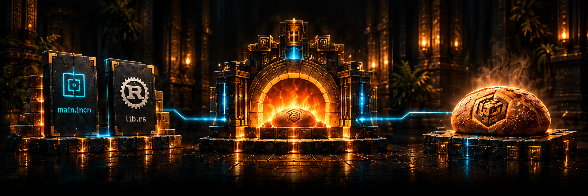

Oven
The build system for Incan.
Build, run, and test your projects. Use Incan and Rust together.
From source to Loaf.
Write your code, build it with Oven, and get a reusable Loaf.

Your project
Incan and Rust, side by side.
Oven
Build and package your project.
Build result
A reusable Loaf.
Build and run
Use Oven from the command line to check, run, and build your project.
incan check src/main.incn
incan run src/main.incn
incan build src/main.incnBuild benchmarks
Illustrative dataOven and Cargo, side by side.
Design preview — example values only. Measurements to follow.
Clean build
No existing build outputs.
Scale per scenario · lower is faster
Incremental build
After a small source change.
Scale per scenario · lower is faster
No-change build
Nothing changed since the last build.
Scale per scenario · lower is faster
Benchmark methodology
Planned comparison: the same Rust project, dependencies, build profile, and machine for both tools.
- Clean builds start without existing build outputs; dependency downloads are excluded.
- Incremental builds repeat the same source change after a completed build.
- No-change builds rerun the command without changing any inputs.
Published results will include project sources, tool versions, machine details, commands, cache conditions, and repeated-run timings. These example values are not performance claims.
Packages, ready to reuse
A Loaf packages a build result with the information needed to reuse it.
Browse Incan.pub →